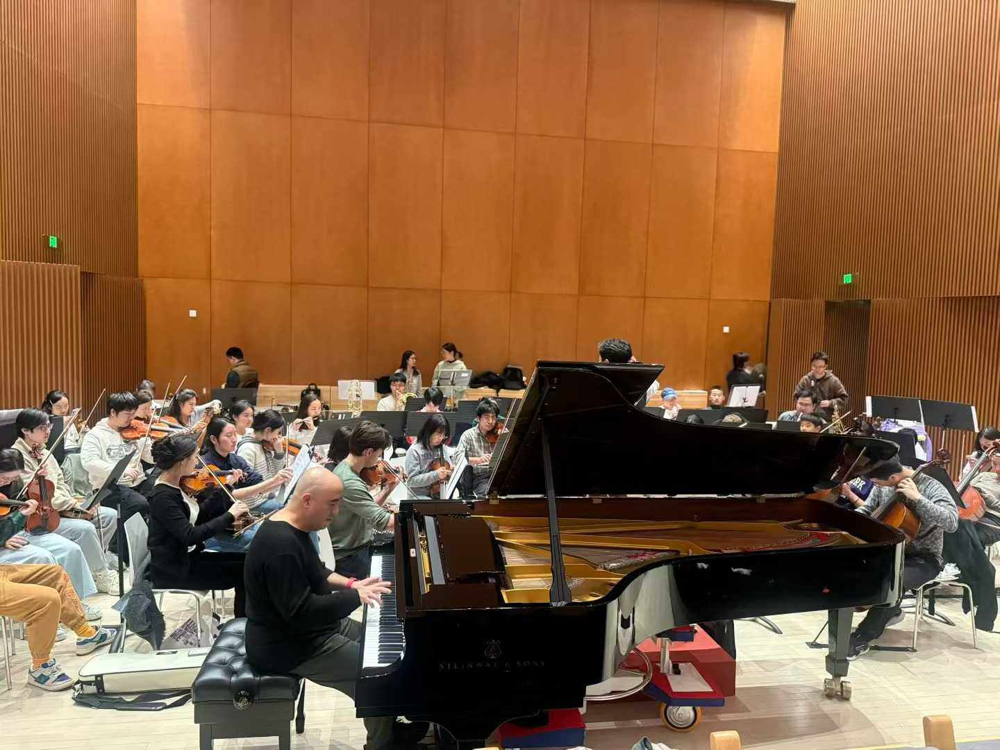

Insights from a Dinner with Kong Xiangdong
By Monica Luo
🔊 You are now listening to a recording of NYU Shanghai Orchestra's latest rehearsal of the Yellow River Piano Concerto 2nd movement with Soloist Professor Kong XiangdongA photo from the December 2nd dinner with some of NYU Shanghai's Performing Arts professors, Professor Kong Xiangdong's team, Professor Kong Xiangdong himself, some of NYU Shanghai's Artistic Partners, and I
Working under Professor Yue Cheng at NYU Shanghai’s Performing Arts department has always been an adventure and this week it unintentionally showed me a glimpse of Shanghai’s urbanization story. On December 2nd, I was invited to join some of the NYU Shanghai performing arts professors and artistic partners to a late dinner and drinks session with Professor Kong Xiangdong and his team to discuss an upcoming performance in March at Cadillac Shanghai Concert Hall. A technical meeting very quickly turned into a conversation about Shanghai's transformation based on one man’s 40 year musical career and the concert hall where it began.
Professor Kong’s career perfectly overlaps with China’s economic boom and reform, and 2026 will be his 40th debut anniversary. He is excited to perform there once again, just his stage will physically 66.36 meters away from where he debuted as in 2004, due to the municipal’s urban redevelopment plan, the whole building was uplifted and moved to its current location on East Yan’an Road, making it a living artifact of Shanghai’s urban planning and redevelopment. Its preservation since the 1930s, rather than demolition, reflects aspects of Shanghai’s modern urbanization strategy from redevelopment while retaining cultural heritage, engineering spectacles to support a modern global image, and the repositioning of classical culture within a commercialized urban landscape. The well preserved, historical building filled with marvelous interior designs and decor now stand as designed for both domestic and international visitors to enjoy shows by world class performers.
Nanjing Theatre - 1934

Cadillac Shanghai Concert Hall - 2025

Shanghai Concert Hall's 66 meter relocation move in 2004
Professor Kong reflected on his career beginning exactly in Shanghai during economic reforms. With a rise in commercial culture and internalization of Shanghai’s performing arts scene, it introduced him many opportunities for growth abroad and to be able to come back to China after studying at Curtis to be a soloist pianist. Today, however, Professor Cheng is preoccupied with a different issue: Shanghai has built too many new performing arts centers, many of which remain underused. This rapid architectural expansion has outpaced the development of sustainable cultural programming, revealing a tension within Shanghai’s urbanization process and the role of performing arts centers as urban artifacts.
Professor Kong is known for his charity work, one of his creative responses to this urban challenge. He now regularly organizes performances that include children, students, elderly, and people with disabilities, such as his December 3, 2025 concert with young disabled musicians. His mission is shifting from traditional elite classical performances to cultural activation to include the community. His enthusiasm of proposing event ideas at dinner was repeatedly met with a governance reality at dinner: “we need government approval.” Like urban planning, Shanghai’s cultural activity in its vibrant urban spaces are structured through municipal planning, public-private partnerships, and regulatory oversight. Performing arts become a symbol of how urbanization in China intertwines with governance.
A photo of Professor Kong Xiangdong rehearsing with NYU Shanghai Orchestra before dinner on Tuesday, December 2, 2025
The chance to participate in this dinner unexpectedly revealed how a single building and an artist’s career can illuminate Shanghai’s urbanization. The Shanghai Concert hall’s history physically represents the city’s plans and priorities while Professor Kong’s work represents a possible solution to redefine cultural spaces for public good and a way to build demand for shows in a new generation of citizens. Together, they show how urbanization is not only about the buildings, but also an evolving culture to fill these buildings.